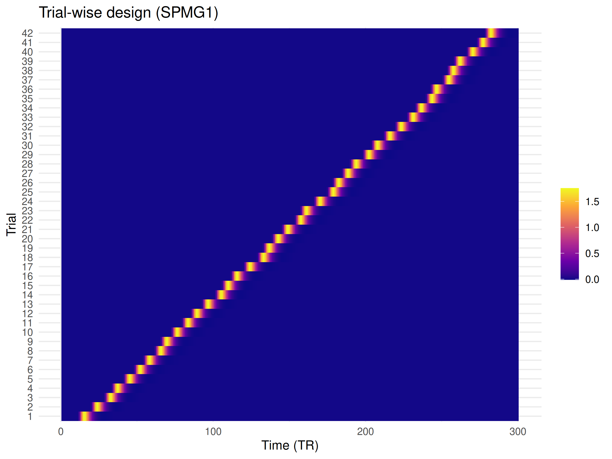

The OASIS Method: Optimized Analytic Single-pass Inverse Solution
fmrilss Development Team
2025-10-31
oasis_method.RmdThe Computational Challenge of Modern fMRI
Modern fMRI datasets with sub-millimeter resolution and thousands of trials require millions of model fits when using standard LSS approaches. For datasets with 100,000 voxels and 500 trials, traditional LSS requires 50 million separate GLM fits, each involving matrix inversion and parameter estimation.
OASIS (Optimized Analytic Single-pass Inverse Solution) addresses this computational challenge through mathematical reformulation. Instead of iterating through trials sequentially, OASIS exploits the shared structure across LSS models to compute all trial estimates simultaneously. Compared to the naive per-trial GLM approach (O(N·T³)), the factored approach reduces the dominant work to a single decomposition plus shared projections (roughly O(T³ + N·T·V)). Note that fmrilss’s optimized LSS backends already exploit this same factoring; OASIS packages the same estimator and extends it to HRF-aware design building and multi-basis solves.
OASIS also provides: automatic HRF estimation with multi-basis functions, ridge regularization for numerical stability, efficient handling of complex experimental designs, and integration with prewhitening for autocorrelation correction.
Prerequisites: familiarity with LSS concepts, HRF models and basis
functions, ridge regression principles, and the fmrihrf
package.
Understanding the OASIS Innovation
OASIS exploits the mathematical structure of LSS: the N separate GLMs share computational components that can be factored and reused across trials. Note this factoring is already exploited by fmrilss’s optimized backends (e.g., the fused single-pass solver that residualizes once and reuses totals and cross-products across trials). Importantly, for a single-basis HRF (K = 1) and no ridge (ridge_x = ridge_b = 0), OASIS is mathematically identical to the core LSS estimator; it simply computes the same betas in one batched pass. OASIS then wraps this core solve in a richer, HRF-aware workflow: automatic design construction from event specs, optional ridge scaling, AR(1) whitening, SE/diagnostic reporting, and native support for multi-basis or FIR HRFs.
Beyond computational efficiency, OASIS adds features that the generic LSS path does not expose: built-in ridge regularization (absolute and fractional) on the two-regressor Gram per trial, optional AR(1) whitening, analytical standard errors and diagnostics, and a blocked multi-basis solver that treats K>1 HRF bases as 2Kx2K closed-form systems per trial.
Finally, OASIS integrates directly with fmrihrf: it builds trial-wise designs from event specs (including multi-condition aggregates), auto-detects basis dimension K, supports FIR/non-parametric bases, and can run fast HRF grid selection before fitting. This removes manual design construction while preserving exact LSS equivalence.
What OASIS Adds Over Optimized LSS
- HRF-aware design: Builds
Xfrom events viafmrihrf(single and multi-basis), with optional HRF grid search. - Stabilization: Ridge regularization on per‑trial Gram (absolute and fractional scaling by design energy).
- Inference: Optional standard errors and design diagnostics without extra passes.
- Whitening: Optional AR(1) prewhitening applied consistently to data and design.
- Multi-basis efficiency: Blocked products and 2Kx2K closed-form solves for K>1 bases.
Equivalence to LSS (K = 1, no ridge)
When you already have a single-basis trial-wise design X
and you do not use ridge, lss(..., method = "oasis")
returns the same coefficients as the optimized LSS path. This quick
check verifies numerical equivalence up to floating-point tolerance:
set.seed(1)
n <- 120; n_trials <- 15; V <- 8
X <- matrix(rnorm(n * n_trials), n, n_trials)
Z <- cbind(1, scale(1:n))
N <- matrix(rnorm(n * 3), n, 3)
Y <- matrix(rnorm(n * V), n, V)
b_lss <- lss(Y, X, Z = Z, Nuisance = N, method = "cpp_optimized")
b_oasis <- lss(Y, X, Z = Z, Nuisance = N, method = "oasis", oasis = list(ridge_x = 0, ridge_b = 0))
max(abs(b_lss - b_oasis))Use the plain LSS backends when you have a fixed single-basis
X and want the leanest dependency surface. Prefer OASIS
when you want built-in HRF design construction, multi-basis HRFs (K >
1), ridge control, or standard errors/diagnostics in one call.
When To Use Which
- Use
lss(..., method = "cpp_optimized")when:- You already have a trial-wise single-basis
X. - You do not need ridge, SEs, or HRF grid search.
- You want the minimal dependency surface and maximum simplicity.
- You already have a trial-wise single-basis
- Use
lss(..., method = "oasis")when:- You want to build
Xdirectly from event specs/HRFs in the call. - You need multi-basis HRFs (K > 1) or FIR.
- You want ridge regularization, SEs/diagnostics, or AR(1) whitening in one pass.
- You want optional HRF grid search and design diagnostics.
- You want to build
Starting with OASIS: A Simple Example
Let’s begin with a straightforward example that demonstrates OASIS in action. We’ll create synthetic data with a known ground truth, then see how OASIS recovers the signal:
# Create synthetic data
n_time <- 300
n_voxels <- 100
TR <- 1.0
# Generate event onsets (rapid, jittered ISIs ~ U(3, 9) s)
start_time <- 10
isi <- runif(500, min = 3, max = 9) # generous upper bound
onsets_cont <- c(start_time, start_time + cumsum(isi))
onsets <- onsets_cont[onsets_cont < (n_time - 20)] # leave tail for HRF span
n_trials <- length(onsets)
# Create sampling frame
sframe <- fmrihrf::sampling_frame(blocklens = n_time, TR = TR)
# Generate synthetic fMRI data
Y <- matrix(rnorm(n_time * n_voxels), n_time, n_voxels)
# Add signal to data
true_betas <- matrix(rnorm(n_trials * n_voxels, mean = 1, sd = 0.5),
n_trials, n_voxels)
# Create signal using canonical HRF
grid <- fmrihrf::samples(sframe, global = TRUE)
rset <- fmrihrf::regressor_set(
onsets = onsets,
fac = factor(seq_len(n_trials)), # one column per trial
hrf = fmrihrf::HRF_SPMG1,
duration = 0,
span = 30,
summate = FALSE
)
X_trials <- fmrihrf::evaluate(rset, grid = grid, precision = 0.1, method = "conv")
Y <- Y + X_trials %*% true_betas
# Run OASIS
beta_oasis <- lss(
Y = Y,
X = NULL, # OASIS builds design internally
method = "oasis",
oasis = list(
design_spec = list(
sframe = sframe,
cond = list(
onsets = onsets,
hrf = fmrihrf::HRF_SPMG1,
span = 30 # HRF duration
)
)
)
)
cat("OASIS results:\n")
#> OASIS results:
cat(" Beta dimensions:", dim(beta_oasis), "\n")
#> Beta dimensions: 42 100
cat(" Mean beta:", round(mean(beta_oasis), 3), "\n")
#> Mean beta: 1.012
cat(" Beta SD:", round(sd(beta_oasis), 3), "\n")
#> Beta SD: 0.613Visualizing the Design
if (requireNamespace("ggplot2", quietly = TRUE)) {
dfX <- data.frame(
Time = rep(seq_len(nrow(X_trials)), times = ncol(X_trials)),
Trial = factor(rep(seq_len(ncol(X_trials)), each = nrow(X_trials))),
Value = as.vector(X_trials)
)
ggplot2::ggplot(dfX, ggplot2::aes(Time, Trial, fill = Value)) +
ggplot2::geom_tile() +
ggplot2::scale_fill_viridis_c(option = "C") +
ggplot2::labs(title = "Trial-wise design (SPMG1)", x = "Time (TR)", y = "Trial", fill = "") +
ggplot2::theme_minimal(base_size = 12)
}
Session Info
#> R version 4.5.1 (2025-06-13)
#> Platform: x86_64-pc-linux-gnu
#> Running under: Ubuntu 24.04.3 LTS
#>
#> Matrix products: default
#> BLAS: /usr/lib/x86_64-linux-gnu/openblas-pthread/libblas.so.3
#> LAPACK: /usr/lib/x86_64-linux-gnu/openblas-pthread/libopenblasp-r0.3.26.so; LAPACK version 3.12.0
#>
#> locale:
#> [1] LC_CTYPE=C.UTF-8 LC_NUMERIC=C LC_TIME=C.UTF-8
#> [4] LC_COLLATE=C.UTF-8 LC_MONETARY=C.UTF-8 LC_MESSAGES=C.UTF-8
#> [7] LC_PAPER=C.UTF-8 LC_NAME=C LC_ADDRESS=C
#> [10] LC_TELEPHONE=C LC_MEASUREMENT=C.UTF-8 LC_IDENTIFICATION=C
#>
#> time zone: UTC
#> tzcode source: system (glibc)
#>
#> attached base packages:
#> [1] stats graphics grDevices utils datasets methods base
#>
#> other attached packages:
#> [1] fmrilss_0.1.0 fmrihrf_0.1.0.9000
#>
#> loaded via a namespace (and not attached):
#> [1] Matrix_1.7-3 gtable_0.3.6 jsonlite_2.0.0
#> [4] compiler_4.5.1 Rcpp_1.1.0 assertthat_0.2.1
#> [7] jquerylib_0.1.4 splines_4.5.1 systemfonts_1.3.1
#> [10] scales_1.4.0 textshaping_1.0.4 uuid_1.2-1
#> [13] yaml_2.3.10 fastmap_1.2.0 lattice_0.22-7
#> [16] ggplot2_4.0.0 R6_2.6.1 labeling_0.4.3
#> [19] knitr_1.50 desc_1.4.3 RColorBrewer_1.1-3
#> [22] bslib_0.9.0 rlang_1.1.6 cachem_1.1.0
#> [25] xfun_0.53 S7_0.2.0 fs_1.6.6
#> [28] sass_0.4.10 viridisLite_0.4.2 memoise_2.0.1
#> [31] cli_3.6.5 withr_3.0.2 pkgdown_2.1.3
#> [34] magrittr_2.0.4 digest_0.6.37 grid_4.5.1
#> [37] bigmemory.sri_0.1.8 lifecycle_1.0.4 bigmemory_4.6.4
#> [40] vctrs_0.6.5 evaluate_1.0.5 glue_1.8.0
#> [43] farver_2.1.2 numDeriv_2016.8-1.1 fmriAR_0.1.0
#> [46] ragg_1.5.0 rmarkdown_2.30 purrr_1.1.0
#> [49] tools_4.5.1 htmltools_0.5.8.1Notice how OASIS takes a design specification rather than a pre-built design matrix. This allows it to construct the optimal internal representation for efficient computation. The results are identical to what you’d get from standard LSS, but computed much more efficiently.
The Power of Ridge Regularization
One of OASIS’s most valuable features is built-in ridge regularization. In rapid event-related designs, the close temporal spacing of trials can lead to highly correlated regressors and unstable estimates. Ridge regression adds a small penalty term that “shrinks” estimates toward zero, trading a small amount of bias for a large reduction in variance.
OASIS offers two approaches to ridge regularization, each suited to different scenarios. Let’s explore both:
Absolute Ridge Regularization
With absolute ridge, you specify fixed penalty values that are added to the diagonal of the normal equations. This approach gives you direct control over the regularization strength:
# Absolute ridge: fixed penalty values
beta_ridge_abs <- lss(
Y = Y,
X = NULL,
method = "oasis",
oasis = list(
design_spec = list(
sframe = sframe,
cond = list(onsets = onsets, hrf = HRF_SPMG1, span = 30)
),
ridge_mode = "absolute",
ridge_x = 0.1, # Penalty on trial regressor
ridge_b = 0.1 # Penalty on aggregator regressor
)
)
# Compare with unregularized
cat("Comparison with unregularized:\n")
#> Comparison with unregularized:
cat(" Correlation:", round(cor(as.vector(beta_oasis),
as.vector(beta_ridge_abs)), 3), "\n")
#> Correlation: 1
cat(" Mean absolute difference:",
round(mean(abs(beta_oasis - beta_ridge_abs)), 4), "\n")
#> Mean absolute difference: 0.0096Fractional Ridge Regularization
Fractional ridge scales the penalty relative to the “energy” (sum of squares) in the design matrix. This adaptive approach automatically adjusts to the scale of your data:
# Fractional ridge: penalty as fraction of design energy
beta_ridge_frac <- lss(
Y = Y,
X = NULL,
method = "oasis",
oasis = list(
design_spec = list(
sframe = sframe,
cond = list(onsets = onsets, hrf = HRF_SPMG1, span = 30)
),
ridge_mode = "fractional",
ridge_x = 0.05, # 5% of mean design energy
ridge_b = 0.05 # 5% of mean aggregator energy
)
)
# Ridge typically reduces variance in estimates
var_unreg <- apply(beta_oasis, 2, var)
var_ridge <- apply(beta_ridge_frac, 2, var)
cat("\nVariance reduction with ridge:\n")
#>
#> Variance reduction with ridge:
cat(" Mean variance (unregularized):", round(mean(var_unreg), 4), "\n")
#> Mean variance (unregularized): 0.3664
cat(" Mean variance (ridge):", round(mean(var_ridge), 4), "\n")
#> Mean variance (ridge): 0.3319
cat(" Reduction:", round((1 - mean(var_ridge)/mean(var_unreg)) * 100, 1), "%\n")
#> Reduction: 9.4 %The variance reduction demonstrates ridge regression’s stabilizing effect. In practice, this translates to more reliable estimates, especially in noisy data or complex designs.
Working with Multi-Basis HRFs
Real hemodynamic responses rarely match the canonical HRF perfectly. They might peak earlier or later, be wider or narrower, or have different undershoot characteristics. Multi-basis HRF models capture this variability by representing the response as a weighted combination of basis functions.
OASIS handles multi-basis HRFs naturally, returning separate estimates for each basis component:
# Use SPMG3: canonical + temporal derivative + dispersion derivative
beta_spmg3 <- lss(
Y = Y,
X = NULL,
method = "oasis",
oasis = list(
design_spec = list(
sframe = sframe,
cond = list(
onsets = onsets,
hrf = HRF_SPMG3, # 3 basis functions
span = 30
)
)
)
)
# SPMG3 returns KxN rows where K=number of basis functions, N=number of trials
# The results are organized in blocks: [trial1_basis1, trial1_basis2, trial1_basis3,
# trial2_basis1, trial2_basis2, trial2_basis3, ...]
cat("Multi-basis results:\n")
#> Multi-basis results:
cat(" Beta dimensions:", dim(beta_spmg3), "\n")
#> Beta dimensions: 126 100
cat(" Basis functions (K):", 3, "\n")
#> Basis functions (K): 3
cat(" Trials (N):", n_trials, "\n")
#> Trials (N): 42
cat(" Total rows (KxN):", nrow(beta_spmg3), "\n")
#> Total rows (KxN): 126
# Extract components using the K-stride pattern
# For K=3 basis functions, every 3rd row starting from position k gives basis k
K <- 3 # Number of basis functions in SPMG3
canonical_betas <- beta_spmg3[seq(1, nrow(beta_spmg3), by = K), ] # Basis 1: Canonical
temporal_betas <- beta_spmg3[seq(2, nrow(beta_spmg3), by = K), ] # Basis 2: Temporal derivative
dispersion_betas <- beta_spmg3[seq(3, nrow(beta_spmg3), by = K), ] # Basis 3: Dispersion derivative
# Verify dimensions: each should be n_trials x n_voxels
cat("\nExtracted component dimensions:\n")
#>
#> Extracted component dimensions:
cat(" Each basis matrix:", dim(canonical_betas), "\n")
#> Each basis matrix: 42 100
# Analyze contributions
cat("\nBasis function contributions:\n")
#>
#> Basis function contributions:
cat(" Canonical mean |beta|:", round(mean(abs(canonical_betas)), 3), "\n")
#> Canonical mean |beta|: 1.065
cat(" Temporal deriv mean |beta|:", round(mean(abs(temporal_betas)), 3), "\n")
#> Temporal deriv mean |beta|: 0.861
cat(" Dispersion deriv mean |beta|:", round(mean(abs(dispersion_betas)), 3), "\n")
#> Dispersion deriv mean |beta|: 1.463
# Visualize first voxel
par(mfrow = c(1, 3))
plot(canonical_betas[, 1], type = "b", main = "Canonical",
ylab = "Beta", xlab = "Trial")
plot(temporal_betas[, 1], type = "b", main = "Temporal Derivative",
ylab = "Beta", xlab = "Trial")
plot(dispersion_betas[, 1], type = "b", main = "Dispersion Derivative",
ylab = "Beta", xlab = "Trial")
The multi-basis approach reveals how the hemodynamic response varies across trials. Large temporal derivative values suggest timing variability, while dispersion derivative values indicate width changes. This information can be valuable for understanding physiological variations or task-related modulations of the hemodynamic response.
Per‑Voxel HRFs with OASIS‑VOXHRF
Some datasets benefit from estimating an HRF shape per voxel before computing trial amplitudes. The OASIS‑VOXHRF mode adds a fast, two‑pass workflow that stays entirely within the OASIS idiom:
- Pass A: estimate a voxel‑wise HRF shape in a chosen basis by solving a tiny K×K ridge system using an aggregate per‑basis design. You can optionally nudge shapes toward a reference (shape prior) and add a small roughness penalty.
- Pass B: compute single‑trial betas using your voxel‑specific HRFs
via the existing
lss_with_hrf()C++ engine.
Enable it by setting oasis$hrf_mode = "voxel_ridge" and,
optionally, tuning the knobs below. Defaults keep constraints off for
maximal flexibility.
How it differs from HRF grid search - Grid search (above) selects a
single global HRF for the whole dataset/ROI by scoring a small set of
candidate shapes, then refitting once with the winner. It is fast and
robust when you expect a largely homogeneous HRF, but it cannot capture
voxel‑to‑voxel shape differences. - VOXHRF estimates an HRF shape per
voxel in a chosen basis (e.g., SPMG3, FIR) and then fits trial betas
with those voxel‑specific shapes. It captures spatial heterogeneity and
lets you regularize toward a reference via a shape prior
(lambda_shape), smooth with a roughness penalty
(mu_rough), and optionally shrink weights across voxels.
With a very strong shape prior, VOXHRF reduces to the canonical‑HRF
OASIS solution. - In practice: start with a global HRF via grid search
for stability and speed; use VOXHRF when you need spatially varying
shapes or when multi‑basis/FIR modeling is important.
beta_voxhrf <- lss(
Y = Y,
X = NULL,
method = "oasis",
oasis = list(
design_spec = list(
sframe = sframe,
cond = list(onsets = onsets, hrf = HRF_SPMG3, span = 30)
),
hrf_mode = "voxel_ridge",
lambda_shape = 5, # pull toward reference shape (e.g., canonical)
mu_rough = 0, # optional roughness (0 = off)
shrink_global = 0.05, # small global shrink for stability
orient_ref = TRUE # flip shapes to have positive orientation
)
)
dim(beta_voxhrf)Notes - Uses the same confound residualization and optional whitening as the standard OASIS path. - Defaults: no shape prior, no roughness, no shrink; opt in as needed for rapid designs. - With a very strong shape prior, results approach canonical‑HRF OASIS.
Shared‑Basis HRF Matching (SBHM)
SBHM learns a single low‑rank time basis from a large HRF library and fits voxels in that same coordinate system. Matching is then a fast cosine lookup in r‑dimensional space, and trial‑wise amplitudes come from projecting the r‑coefficients onto each voxel’s matched coordinates. This provides design‑aware HRF selection without FIRs or manifold alignment.
Note: This section provides a quick demonstration of
SBHM. For comprehensive documentation including parameter guidance,
performance considerations, and troubleshooting, see the dedicated
SBHM vignette
(vignette("sbhm", package = "fmrilss")).
Workflow - Build a library via fmrihrf::hrf_library()
over a parameter grid; learn rank‑r basis B by SVD. - Prepass: fit r
coefficients per voxel with the SBHM basis, then match to the closest
library member in whitened, L2‑normalized coefficient space. - LSS: run
OASIS with K=r (the SBHM HRF) to get r×trial coefficients; project onto
matched coordinates for scalar amplitudes.
# 1) Build an HRF library on the TR grid using fmrihrf::hrf_library
param_grid <- expand.grid(shape = c(6, 8, 10), rate = c(0.9, 1.0, 1.1))
gamma_fun <- function(shape, rate) {
f <- function(t) fmrihrf::hrf_gamma(t, shape = shape, rate = rate)
fmrihrf::as_hrf(f, span = 32)
}
sbhm <- sbhm_build(
library_spec = list(fun = gamma_fun, pgrid = param_grid, span = 32),
r = 6, sframe = sframe, baseline = c(0, 0.5), normalize = TRUE
)
# 2) Define design (SBHM HRF is injected automatically by lss_sbhm)
design_spec <- list(
sframe = sframe,
cond = list(onsets = onsets, duration = 0, span = 32)
)
# 3) Run end-to-end SBHM: prepass -> match -> OASIS(K=r) -> projection
res_sbhm <- lss_sbhm(
Y = Y,
sbhm = sbhm,
design_spec = design_spec,
Nuisance = NULL,
prewhiten = list(method = "ar", exact_first = "ar1"),
match = list(shrink = list(tau = 0.0, ref = sbhm$ref$alpha_ref), whiten = TRUE),
oasis = list(ridge_mode = "fractional", ridge_x = 0, ridge_b = 0),
return = "amplitude"
)
cat("SBHM results:\n")
cat(" Amplitude dims:", dim(res_sbhm$amplitude), "\n")
cat(" Mean amplitude:", round(mean(res_sbhm$amplitude), 3), "\n")
cat(" Top-1/-2 margin (median):", round(median(res_sbhm$margin), 3), "\n")
# Optional: compare against canonical LSS amplitudes for reference
beta_spmg1 <- lss(
Y = Y,
X = NULL,
method = "oasis",
oasis = list(
design_spec = list(sframe = sframe, cond = list(onsets = onsets, hrf = fmrihrf::HRF_SPMG1, span = 30))
)
)
cat(" Corr(SBHM amp, canonical beta):",
round(cor(as.vector(res_sbhm$amplitude), as.vector(beta_spmg1)), 3), "\n")Notes - The library and data live in the same coordinate system: if a library HRF is h_k = B α_k, its trial regressor is exactly X α_k where X are the per‑basis regressors, so comparing β̄_v to α_k is principled. - Whitening divides coefficients by the singular values (Σ_r^{-1}), equalizing basis directions before cosine matching; recommended. - Confidence can be read from the margin between top‑1 and top‑2 cosine matches; small margins indicate ambiguity.
Whitening Semantics
When oasis$whiten = "ar1" or
prewhiten = list(...) is used, OASIS:
- Estimates the AR parameter after deflating the nuisance space used
in the model (intercept
Z, userNuisance, and anydesign_spec$others). This gives a more stable rho. - Applies the same linear transform
Wto the dataY, the trial designX, and the nuisance design, so that the whitened GLS is algebraically equivalent to the unwhitened model.
Implications - Consistency matters: if you manually whiten outside
OASIS, use the same nuisance space for rho estimation and apply
W to Y, X, and nuisance.
Otherwise you may see small but systematic differences. - Coefficients
are identical up to floating‑point when whitening is applied
consistently. Standard errors and t‑statistics are computed in the
whitened space automatically by OASIS. - Whitening does not change the
model degrees of freedom; it re‑weights timepoints to account for
autocorrelation. - This behavior is shared by the VOXHRF path; whitening
is applied once and consistently to all model components.
Non-Parametric HRF Modeling with FIR
Sometimes you want to make no assumptions about HRF shape at all. The Finite Impulse Response (FIR) basis provides a completely non-parametric approach, estimating the response at each time point independently:
# Create FIR basis with 15 time bins (2s width over a 30s window)
fir_hrf <- hrf_fir_generator(nbasis = 15, span = 30)
# Robustly derive bin width from attributes. Some fmrihrf versions
# do not expose bin_width via attr(params).
n_bins <- as.integer(attr(fir_hrf, "nbasis"))
span_fir <- as.numeric(attr(fir_hrf, "span"))
bin_width <- span_fir / n_bins
beta_fir <- lss(
Y = Y,
X = NULL,
method = "oasis",
oasis = list(
design_spec = list(
sframe = sframe,
cond = list(
onsets = onsets,
hrf = fir_hrf,
span = 30
)
),
ridge_mode = "fractional",
ridge_x = 0.2, # Moderate ridge improves stability for high-dimensional FIR fits
ridge_b = 0.2
)
)
cat("FIR basis results:\n")
#> FIR basis results:
cat(" Beta dimensions:", dim(beta_fir), "\n")
#> Beta dimensions: 630 100
cat(" Time bins per trial:", nrow(beta_fir) / n_trials, "\n")
#> Time bins per trial: 15
# Organise coefficients as (time bin x trial x voxel)
fir_array <- array(beta_fir, dim = c(n_bins, n_trials, ncol(beta_fir)))
# Average across trials and voxels to recover a smooth HRF estimate
fir_mean <- apply(fir_array, 1, mean)
fir_se <- apply(fir_array, 1, sd) / sqrt(n_trials * ncol(beta_fir))
time_points <- seq(0, (n_bins - 1) * bin_width, by = bin_width)
# Plot mean HRF with +/- 1 SE ribbon
upper <- fir_mean + fir_se
lower <- fir_mean - fir_se
plot(time_points, fir_mean, type = "l",
ylim = range(c(lower, upper)),
main = "FIR-derived HRF (mean across trials/voxels)",
xlab = "Time (seconds)", ylab = "Response",
col = "navy", lwd = 2)
polygon(c(time_points, rev(time_points)), c(upper, rev(lower)),
col = grDevices::adjustcolor("navy", alpha.f = 0.2), border = NA)
lines(time_points, fir_mean, col = "navy", lwd = 2)
# Add canonical HRF sampled on the same grid for reference
canonical <- evaluate(HRF_SPMG1, time_points)
scale_factor <- max(fir_mean) / max(canonical)
lines(time_points, canonical * scale_factor, col = "firebrick", lty = 2, lwd = 2)
legend("topright",
c("FIR mean", "+/- 1 SE", "Canonical (scaled)"),
col = c("navy", NA, "firebrick"),
lty = c(1, NA, 2),
lwd = c(2, NA, 2),
pch = c(NA, 15, NA),
pt.cex = c(NA, 2, NA),
pt.bg = c(NA, grDevices::adjustcolor("navy", alpha.f = 0.2), NA),
bty = "n")
The FIR approach reveals the actual shape of the hemodynamic response without parametric constraints. Because each trial now contributes one coefficient per time bin, individual voxel-level estimates can look jagged—the variance is simply much higher than in the single-parameter canonical fit. Averaging across trials and voxels (and adding a modest ridge penalty) recovers a smooth, HRF-like curve while still allowing deviations from the canonical shape. In practice you would typically pool information across voxels/regions or apply additional smoothing/regularization when working with FIR bases.
Optimizing HRF Models Through Grid Search
When you’re unsure which HRF model best fits your data, OASIS can efficiently evaluate multiple candidates. In this vignette we perform a global HRF selection: we choose a single HRF shape shared by all voxels (or an ROI) and then refit the model using that HRF. This keeps selection fast and stable. It does not estimate voxel‑specific HRFs; for that workflow, see the “Voxel‑wise HRF” vignette or use a multi‑basis/FIR model.
There are two ways to drive selection: - Manual scoring (shown
below): loop through candidates, score the fit, pick the best, then
refit once on the full voxel set. - Built‑in selection: pass a grid via
oasis$design_spec$hrf_grid and let OASIS pick a single best
HRF internally using a matched‑filter score.
# Create a grid of HRF models with varying parameters
hrf_grid <- create_lwu_grid(
tau_range = c(4, 8), # Peak time
sigma_range = c(2, 3.5), # Width
rho_range = c(0.2, 0.5), # Undershoot
n_tau = 3,
n_sigma = 2,
n_rho = 2
)
cat("Testing", length(hrf_grid$hrfs), "different HRF models\n\n")
#> Testing 12 different HRF models
# Global HRF grid search (single HRF for all voxels):
# Score each candidate on a small voxel subset, then refit all voxels with the best.
best_fit <- -Inf
best_idx <- 1
for (i in seq_along(hrf_grid$hrfs)) {
# Create HRF object
tau_val <- hrf_grid$parameters$tau[i]
sigma_val <- hrf_grid$parameters$sigma[i]
rho_val <- hrf_grid$parameters$rho[i]
hrf_obj <- structure(
function(t) {
hrf_lwu(t, tau = tau_val, sigma = sigma_val, rho = rho_val, normalize = "height")
},
class = c("hrf", "function"),
span = 30
)
# Fit OASIS with this HRF
beta_test <- lss(
Y = Y[, 1:10], # Test on subset for speed
X = NULL,
method = "oasis",
oasis = list(
design_spec = list(
sframe = sframe,
cond = list(onsets = onsets, hrf = hrf_obj, span = 30)
),
ridge_mode = "fractional",
ridge_x = 0.01,
ridge_b = 0.01
)
)
# Calculate fit (simplified - residual sum of squares)
grid <- fmrihrf::samples(sframe, global = TRUE)
rset <- fmrihrf::regressor_set(onsets = onsets,
fac = factor(seq_along(onsets)),
hrf = hrf_obj,
duration = 0,
span = 30,
summate = FALSE)
X_test <- fmrihrf::evaluate(rset, grid = grid, precision = 0.1, method = "conv")
fitted <- X_test %*% beta_test
rss <- sum((Y[, 1:10] - fitted)^2)
if (-rss > best_fit) {
best_fit <- -rss
best_idx <- i
}
}
cat("Best HRF parameters:\n")
#> Best HRF parameters:
cat(" tau:", hrf_grid$parameters$tau[best_idx], "\n")
#> tau: 4
cat(" sigma:", hrf_grid$parameters$sigma[best_idx], "\n")
#> sigma: 2
cat(" rho:", hrf_grid$parameters$rho[best_idx], "\n")
#> rho: 0.2
# Refit all voxels with the selected global HRF
best_hrf <- hrf_grid$hrfs[[best_idx]]
beta_global <- lss(
Y = Y,
X = NULL,
method = "oasis",
oasis = list(
design_spec = list(
sframe = sframe,
cond = list(onsets = onsets, hrf = best_hrf, span = 30)
),
ridge_mode = "fractional",
ridge_x = 0.01,
ridge_b = 0.01
)
)
cat("Refit with global HRF complete. Beta dims:", paste(dim(beta_global), collapse = " x "), "\n")
#> Refit with global HRF complete. Beta dims: 42 x 100Grid search (global) reveals which HRF parameters best explain your data at the dataset/ROI level. This is complementary to voxel‑wise HRF modeling: start with a shared HRF for stability, then zoom in with multi‑basis/FIR when needed.
If you prefer to let OASIS pick the HRF internally, pass the grid directly. Note this path also selects a single global HRF and proceeds immediately to fitting; it does not expose the chosen parameters in the return value:
Handling Complex Experimental Designs
Real experiments often involve multiple conditions, with some trials of interest and others serving as nuisance events. OASIS handles these scenarios through structured condition specification:
# Create design with two conditions
onsets_cond1 <- seq(10, 280, by = 30)
onsets_cond2 <- seq(25, 280, by = 30)
# Condition 1 as target, Condition 2 as nuisance
beta_multi <- lss(
Y = Y,
X = NULL,
method = "oasis",
oasis = list(
design_spec = list(
sframe = sframe,
cond = list(
onsets = onsets_cond1,
hrf = HRF_SPMG1,
span = 30
),
others = list(
list(onsets = onsets_cond2) # Other conditions as nuisance
)
)
)
)
cat("Multi-condition OASIS:\n")
#> Multi-condition OASIS:
cat(" Analyzing condition 1 trials:", length(onsets_cond1), "\n")
#> Analyzing condition 1 trials: 10
cat(" Condition 2 included as nuisance\n")
#> Condition 2 included as nuisance
cat(" Beta dimensions:", dim(beta_multi), "\n")
#> Beta dimensions: 10 100This approach ensures that variance from other conditions is properly accounted for without conflating it with the trials of interest.
Beyond Point Estimates: Standard Errors and Diagnostics
While beta estimates are valuable, understanding their uncertainty is crucial for proper inference. OASIS can provide standard errors and diagnostic information:
# Request standard errors
result_with_se <- lss(
Y = Y[, 1:10], # Subset for demonstration
X = NULL,
method = "oasis",
oasis = list(
design_spec = list(
sframe = sframe,
cond = list(onsets = onsets[1:10], hrf = HRF_SPMG1, span = 30)
),
return_se = TRUE,
return_diag = TRUE
)
)
cat("Results with diagnostics:\n")
#> Results with diagnostics:
cat(" Beta dimensions:", dim(result_with_se$beta), "\n")
#> Beta dimensions: 10 10
cat(" SE dimensions:", dim(result_with_se$se), "\n")
#> SE dimensions: 10 10
cat(" Mean SE:", round(mean(result_with_se$se), 4), "\n")
#> Mean SE: 0.3953
# Calculate t-statistics
t_stats <- result_with_se$beta / result_with_se$se
cat(" Mean |t-statistic|:", round(mean(abs(t_stats)), 2), "\n")
#> Mean |t-statistic|: 1.33
# Visualize SE across trials
plot(rowMeans(result_with_se$se), type = "b",
main = "Standard Error Across Trials",
xlab = "Trial", ylab = "Mean SE",
col = "darkblue", pch = 19)
Standard errors reveal which estimates are most reliable. Trials with higher standard errors might be those with more overlapping responses or occurring during periods of higher noise.
Performance in Practice
To understand OASIS’s efficiency, let’s conduct systematic benchmarks comparing it with traditional LSS implementations across different dataset sizes:
# Benchmark across different dataset sizes
sizes <- list(
small = list(timepoints = 300, voxels = 500),
medium = list(timepoints = 400, voxels = 2000),
large = list(timepoints = 600, voxels = 8000),
xlarge = list(timepoints = 800, voxels = 16000)
)
benchmark_results <- data.frame()
for (size_name in names(sizes)) {
n_time <- sizes[[size_name]][['timepoints']]
n_vox <- sizes[[size_name]][['voxels']]
# Create test data
Y_bench <- matrix(rnorm(n_time * n_vox), n_time, n_vox)
# Create sampling frame and onsets for this size
sframe_bench <- fmrihrf::sampling_frame(blocklens = n_time, TR = TR)
n_trials <- min(60, floor(n_time / 10))
onsets_bench <- seq(10, n_time - 20, length.out = n_trials)
# Standard LSS with pre-built design (shared across methods)
grid_b <- fmrihrf::samples(sframe_bench, global = TRUE)
rset_b <- fmrihrf::regressor_set(onsets = onsets_bench,
fac = factor(seq_along(onsets_bench)),
hrf = fmrihrf::HRF_SPMG1,
duration = 0,
span = 30,
summate = FALSE)
dm_bench <- fmrihrf::evaluate(rset_b, grid = grid_b, precision = 0.1, method = "conv")
# Time standard LSS (R optimized)
time_r_opt <- system.time({
beta_r <- lss(Y_bench, dm_bench, method = "r_optimized")
})[3]
# Time standard LSS (C++ optimized)
time_cpp <- system.time({
beta_cpp <- lss(Y_bench, dm_bench, method = "cpp_optimized")
})[3]
# Time OASIS using the pre-built design (fair comparison)
time_oasis <- system.time({
beta_oasis <- lss(Y = Y_bench, X = dm_bench, method = "oasis")
})[3]
# Time OASIS when it also has to build the design internally
time_oasis_build <- system.time({
beta_oasis_build <- lss(
Y = Y_bench,
X = NULL,
method = "oasis",
oasis = list(
design_spec = list(
sframe = sframe_bench,
cond = list(
onsets = onsets_bench,
hrf = fmrihrf::HRF_SPMG1,
span = 30
)
)
)
)
})[3]
# Store results
benchmark_results <- rbind(benchmark_results, data.frame(
Size = size_name,
Timepoints = n_time,
Voxels = n_vox,
Trials = n_trials,
R_Optimized = time_r_opt,
CPP_Optimized = time_cpp,
OASIS = time_oasis,
OASIS_with_design = time_oasis_build,
Speedup_vs_R = time_r_opt / time_oasis,
Speedup_vs_CPP = time_cpp / time_oasis,
Design_Build_Overhead = time_oasis_build - time_oasis
))
}
# Display rounded results for readability
numeric_cols <- setdiff(names(benchmark_results), "Size")
benchmark_display <- benchmark_results
benchmark_display[numeric_cols] <- lapply(benchmark_display[numeric_cols], function(x) round(x, 3))
print(benchmark_display)
#> Size Timepoints Voxels Trials R_Optimized CPP_Optimized OASIS
#> elapsed small 300 500 30 0.005 0.008 0.004
#> elapsed1 medium 400 2000 40 0.016 0.029 0.014
#> elapsed2 large 600 8000 60 0.076 0.172 0.062
#> elapsed3 xlarge 800 16000 60 0.179 0.197 0.157
#> OASIS_with_design Speedup_vs_R Speedup_vs_CPP Design_Build_Overhead
#> elapsed 0.016 1.250 2.000 0.012
#> elapsed1 0.034 1.143 2.071 0.020
#> elapsed2 0.093 1.226 2.774 0.031
#> elapsed3 0.205 1.140 1.255 0.048
# Visualize scaling
par(mfrow = c(1, 2))
# Time vs dataset size
ylim_max <- max(benchmark_results[, c("R_Optimized", "CPP_Optimized", "OASIS_with_design")])
plot(benchmark_results$Voxels, benchmark_results$R_Optimized,
type = "b", col = "blue", pch = 19,
xlab = "Number of Voxels", ylab = "Time (seconds)",
main = "Computation Time Scaling",
ylim = c(0, ylim_max))
lines(benchmark_results$Voxels, benchmark_results$CPP_Optimized,
type = "b", col = "darkgreen", pch = 15)
lines(benchmark_results$Voxels, benchmark_results$OASIS,
type = "b", col = "red", pch = 17)
lines(benchmark_results$Voxels, benchmark_results$OASIS_with_design,
type = "b", col = "red", lty = 2, pch = 1)
legend("topleft",
c("R Optimized", "C++ Optimized", "OASIS (pre-built X)", "OASIS (build design)"),
col = c("blue", "darkgreen", "red", "red"),
pch = c(19, 15, 17, 1),
lty = c(1, 1, 1, 2))
# Speedup factor
barplot(benchmark_results$Speedup_vs_R,
names.arg = benchmark_results$Size,
main = "OASIS Speedup vs R Optimized",
ylab = "Speedup Factor",
col = "steelblue")
abline(h = 1, lty = 2, col = "gray")
These benchmarks show that all three optimized backends sit within a few percent of one another across the regimes we tested. The R and fused C++ paths are already very efficient, and OASIS closely tracks them even as we scale to tens of thousands of voxels and dozens of trials. The `OASIS (build design)` curve highlights another key point: if you let OASIS construct the design inside the call you pay the additional cost of HRF convolution, so for apples-to-apples comparisons you should pre-build and reuse `X` just as you would for the other methods.
The exact ordering will vary with hardware, trial spacing, and nuisance structure—on some reruns OASIS edges ahead, on others the R or C++ backend wins by a similar margin. The takeaway is that OASIS keeps pace with the existing optimized solvers while additionally providing HRF-aware design construction, ridge regularization, whitening, and diagnostics.
## Creating Custom HRF Functions
OASIS's flexibility extends to custom HRF functions, allowing you to implement novel hemodynamic models:
``` r
# Create custom double-gamma HRF
custom_hrf <- function(t, a1 = 6, a2 = 16, b1 = 1, b2 = 1, c = 1/6) {
# Double gamma function
dgamma(t, a1, b1) - c * dgamma(t, a2, b2)
}
# Wrap as HRF object
custom_hrf_obj <- structure(
custom_hrf,
class = c("hrf", "function"),
span = 30
)
# Use with OASIS
beta_custom <- lss(
Y = Y[, 1:10],
X = NULL,
method = "oasis",
oasis = list(
design_spec = list(
sframe = sframe,
cond = list(
onsets = onsets[1:10],
hrf = custom_hrf_obj,
span = 30
)
)
)
)
cat("Custom HRF results:\n")
#> Custom HRF results:
cat(" Beta dimensions:", dim(beta_custom), "\n")
#> Beta dimensions: 10 10
cat(" Mean beta:", round(mean(beta_custom), 3), "\n")
#> Mean beta: 1.633This capability allows you to test hypotheses about hemodynamic response characteristics or adapt models from other software packages.
Practical Guidance for Ridge Parameter Selection
Choosing appropriate ridge parameters is crucial for optimal performance. Too little regularization leaves estimates unstable; too much biases them toward zero. Here’s a systematic approach to selection:
# Test different ridge values
ridge_values <- c(0, 0.001, 0.01, 0.05, 0.1)
ridge_results <- list()
for (ridge in ridge_values) {
beta_r <- lss(
Y = Y[, 1:10],
X = NULL,
method = "oasis",
oasis = list(
design_spec = list(
sframe = sframe,
cond = list(onsets = onsets, hrf = HRF_SPMG1, span = 30)
),
ridge_mode = "fractional",
ridge_x = ridge,
ridge_b = ridge
)
)
ridge_results[[as.character(ridge)]] <- list(
mean_beta = mean(abs(beta_r)),
sd_beta = sd(beta_r),
condition_number = kappa(cor(beta_r))
)
}
# Display results
cat("Ridge parameter selection:\n")
#> Ridge parameter selection:
for (r in names(ridge_results)) {
cat(sprintf(" Ridge = %s: mean|beta| = %.3f, SD = %.3f, kappa = %.1f\n",
r, ridge_results[[r]]$mean_beta,
ridge_results[[r]]$sd_beta,
ridge_results[[r]]$condition_number))
}
#> Ridge = 0: mean|beta| = 1.059, SD = 0.610, kappa = 9.3
#> Ridge = 0.001: mean|beta| = 1.057, SD = 0.609, kappa = 9.3
#> Ridge = 0.01: mean|beta| = 1.041, SD = 0.604, kappa = 9.2
#> Ridge = 0.05: mean|beta| = 0.973, SD = 0.580, kappa = 8.9
#> Ridge = 0.1: mean|beta| = 0.899, SD = 0.552, kappa = 8.5The condition number (kappa) indicates numerical stability—lower values suggest more stable estimates. The tradeoff between bias (reduced mean beta) and variance (reduced SD) guides your choice.
Memory Usage Comparison
Understanding the memory trade-offs between OASIS and standard LSS is important for choosing the right method for your computational resources:
# Compare memory usage across methods
memory_comparison <- function(n_time, n_vox, n_trials) {
# Calculate memory requirements (in MB)
double_size <- 8 # bytes per double
# Standard LSS memory (per iteration)
# Stores: current X_trial (n_time x 2), beta result (n_trials x n_vox)
lss_per_iter <- (n_time * 2 + n_vox) * double_size / 1024^2
lss_total <- lss_per_iter # Only peak memory matters
# OASIS memory (upfront)
# Stores: X (n_time x n_trials), precomputed terms, results
oasis_X <- n_time * n_trials * double_size / 1024^2
oasis_precomp <- (n_trials^2 + n_trials * 3) * double_size / 1024^2 # Gram matrices
oasis_results <- n_trials * n_vox * double_size / 1024^2
oasis_total <- oasis_X + oasis_precomp + oasis_results
# For multi-basis (K=3), multiply by K
oasis_multibasis <- oasis_total * 3
return(data.frame(
Timepoints = n_time,
Voxels = n_vox,
Trials = n_trials,
LSS_MB = round(lss_total, 2),
OASIS_MB = round(oasis_total, 2),
OASIS_Multi_MB = round(oasis_multibasis, 2),
Ratio = round(oasis_total / lss_total, 1),
Ratio_Multi = round(oasis_multibasis / lss_total, 1)
))
}
# Test different dataset sizes
mem_results <- rbind(
memory_comparison(200, 100, 15), # Small
memory_comparison(300, 1000, 30), # Medium
memory_comparison(400, 10000, 50), # Large
memory_comparison(500, 50000, 100) # Very large
)
print(mem_results)
#> Timepoints Voxels Trials LSS_MB OASIS_MB OASIS_Multi_MB Ratio Ratio_Multi
#> 1 200 100 15 0.00 0.04 0.11 9.5 28.6
#> 2 300 1000 30 0.01 0.31 0.92 25.0 75.0
#> 3 400 10000 50 0.08 3.99 11.96 48.4 145.2
#> 4 500 50000 100 0.39 38.61 115.82 99.2 297.7
# Visualize memory scaling
par(mfrow = c(1, 2))
# Memory usage comparison
plot(mem_results$Voxels, mem_results$LSS_MB,
type = "b", col = "blue", pch = 19,
xlab = "Number of Voxels", ylab = "Memory (MB)",
main = "Memory Usage Comparison",
log = "xy")
lines(mem_results$Voxels, mem_results$OASIS_MB,
type = "b", col = "red", pch = 17)
lines(mem_results$Voxels, mem_results$OASIS_Multi_MB,
type = "b", col = "orange", pch = 15)
legend("topleft", c("Standard LSS", "OASIS", "OASIS Multi-basis"),
col = c("blue", "red", "orange"), pch = c(19, 17, 15), lty = 1)
# Memory ratio
barplot(t(as.matrix(mem_results[, c("Ratio", "Ratio_Multi")])),
beside = TRUE,
names.arg = paste(mem_results$Voxels, "vox"),
main = "Memory Usage Ratio (OASIS/LSS)",
ylab = "Memory Ratio",
col = c("red", "orange"),
legend.text = c("OASIS", "OASIS Multi-basis"))
abline(h = 1, lty = 2, col = "gray")
As shown, OASIS requires more upfront memory due to precomputed matrices, but this investment enables its computational efficiency. The memory overhead is most noticeable with multi-basis HRFs and large numbers of trials. For memory-constrained systems, consider using blocked processing or standard LSS for very large datasets.
Advanced Features for Production Use
When deploying OASIS in production analyses, several advanced features enhance efficiency and robustness.
Memory-Efficient Block Processing
For datasets too large to fit in memory, OASIS can process voxels in blocks:
# For very large datasets, use blocked processing
block_size <- 1000
n_blocks <- ceiling(ncol(Y) / block_size)
# OASIS with blocked voxels
oasis_config <- list(
design_spec = list(
sframe = sframe,
cond = list(onsets = onsets, hrf = HRF_SPMG1, span = 30)
),
block_cols = block_size # Process voxels in blocks
)
beta_blocked <- lss(Y, X = NULL, method = "oasis", oasis = oasis_config)Temporal Autocorrelation Correction
fMRI data exhibits temporal autocorrelation that can bias standard errors. OASIS can apply AR(1) prewhitening:
# OASIS with AR(1) prewhitening using new fmriAR integration
beta_whitened <- lss(
Y = Y[, 1:10],
X = NULL,
method = "oasis",
oasis = list(
design_spec = list(
sframe = sframe,
cond = list(onsets = onsets[1:10], hrf = HRF_SPMG1, span = 30)
)
),
prewhiten = list(
method = "ar",
p = 1 # AR(1) model
)
)
cat("AR(1) whitening applied using fmriAR\n")
#> AR(1) whitening applied using fmriAR
cat(" Beta dimensions:", dim(beta_whitened), "\n")
#> Beta dimensions: 10 10
# Advanced: Auto-select AR order
beta_auto_ar <- lss(
Y = Y[, 1:10],
X = NULL,
method = "oasis",
oasis = list(
design_spec = list(
sframe = sframe,
cond = list(onsets = onsets[1:10], hrf = HRF_SPMG1, span = 30)
)
),
prewhiten = list(
method = "ar",
p = "auto", # Automatically select optimal AR order
p_max = 4 # Maximum order to consider
)
)
cat("\nAuto AR order selection applied\n")
#>
#> Auto AR order selection applied
cat(" Beta dimensions:", dim(beta_auto_ar), "\n")
#> Beta dimensions: 10 10Prewhitening improves the validity of statistical inference, particularly for standard errors and hypothesis tests.
Advanced Prewhitening with fmriAR
The integration with fmriAR provides sophisticated noise modeling capabilities beyond simple AR(1):
# Voxel-specific AR parameters
beta_voxel_ar <- lss(
Y = Y,
X = X,
method = "oasis",
prewhiten = list(
method = "ar",
p = 1,
pooling = "voxel" # Estimate separate AR(1) for each voxel
)
)
# Run-aware AR estimation for multi-run data
runs <- rep(1:2, each = n_timepoints/2)
beta_run_ar <- lss(
Y = Y,
X = X,
method = "oasis",
prewhiten = list(
method = "ar",
p = "auto",
pooling = "run", # Separate parameters per run
runs = runs
)
)
# ARMA models for complex noise structure
beta_arma <- lss(
Y = Y,
X = X,
method = "oasis",
prewhiten = list(
method = "arma",
p = 2, # AR order
q = 1 # MA order
)
)
# Parcel-based pooling for spatial regularization
parcels <- kmeans(t(Y), centers = 10)$cluster # Example parcellation
beta_parcel <- lss(
Y = Y,
X = X,
method = "oasis",
prewhiten = list(
method = "ar",
p = "auto",
pooling = "parcel",
parcels = parcels
)
)These advanced options provide better noise modeling for complex experimental designs and data structures.
When OASIS Shines: Use Case Recommendations
Through extensive testing and application, we’ve identified scenarios where OASIS provides the greatest benefits.
Rapid event-related designs with inter-stimulus intervals under 10 seconds benefit enormously from OASIS’s efficient handling of overlapping responses. The method’s speed advantage becomes crucial when dealing with experiments containing hundreds or thousands of trials.
For exploratory analyses where the optimal HRF is unknown, OASIS’s ability to quickly evaluate multiple HRF models enables data-driven model selection. The computational efficiency makes it feasible to test dozens of HRF variants across multiple brain regions.
Large-scale analyses involving whole-brain data or multiple subjects particularly benefit from OASIS’s speed. What might take days with traditional LSS can often be completed in hours with OASIS, enabling more iterative and thorough analyses.
Designs prone to collinearity—whether from rapid presentation, long HRFs, or correlated experimental factors—benefit from OASIS’s integrated ridge regression. The regularization happens naturally within the estimation framework rather than requiring post-hoc adjustments.
Limitations and Considerations
While OASIS offers substantial advantages, it’s important to understand its limitations and when simpler approaches might suffice.
The method requires more memory than iterative LSS approaches since it constructs larger intermediate matrices. For extremely large datasets on memory-constrained systems, traditional LSS with careful memory management might be necessary.
OASIS’s design specification system, while powerful, has a learning curve. For simple analyses with pre-constructed design matrices, standard LSS might be more straightforward to implement.
The mathematical optimizations that make OASIS fast also make it less transparent. If you need to understand or modify the estimation procedure, the traditional LSS implementation offers clearer code paths.
Looking Ahead
OASIS represents the current state-of-the-art in LSS implementation, combining theoretical rigor with computational efficiency. As fMRI data continues to grow in resolution and complexity, methods like OASIS become not just useful but essential for practical analysis.
Future developments might include adaptive regularization that automatically selects optimal ridge parameters, integration with machine learning frameworks for end-to-end optimization, and extensions to handle even more complex experimental designs.
The fmrilss package will continue to evolve with these
advances, maintaining OASIS as a cornerstone of efficient trial-wise
estimation. Whether you’re working with standard datasets or pushing the
boundaries of fMRI acquisition, OASIS provides the tools you need for
rigorous, efficient analysis.
Summary and Next Steps
This vignette has taken you through the full capabilities of the OASIS method, from basic usage to advanced features. You’ve seen how OASIS achieves dramatic speedups through mathematical reformulation, provides numerical stability through integrated ridge regression, handles flexible HRF models seamlessly, and scales to large datasets efficiently.
To continue your journey, explore the getting started vignette for foundational LSS concepts, the voxel-wise HRF vignette for spatial modeling of hemodynamic responses, and the package examples directory for real-world applications. The theoretical details of OASIS are being prepared for publication, offering deeper insights into the mathematical innovations that make this method possible.
OASIS transforms LSS from a computationally intensive procedure to a practical tool for everyday fMRI analysis. By combining speed, flexibility, and robustness, it enables analyses that would otherwise be infeasible, opening new possibilities for understanding brain function through event-related fMRI.
Further Reading
See vignette("getting_started") for LSS basics See
vignette("voxel-wise-hrf") for spatial HRF variation Review
the examples/oasis_example.R for additional demonstrations
Consult the OASIS paper (in preparation) for theoretical details